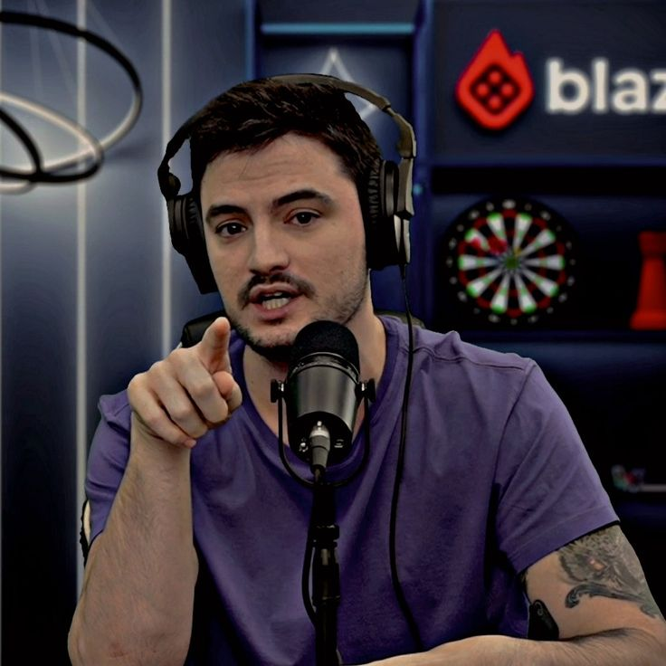
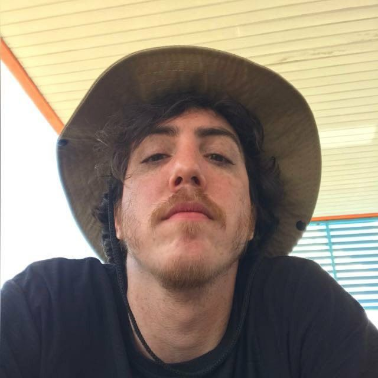
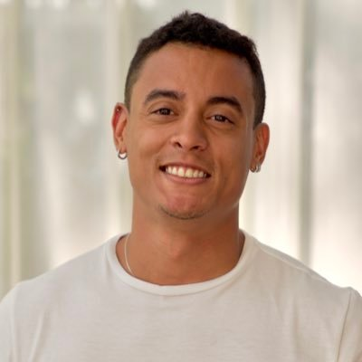
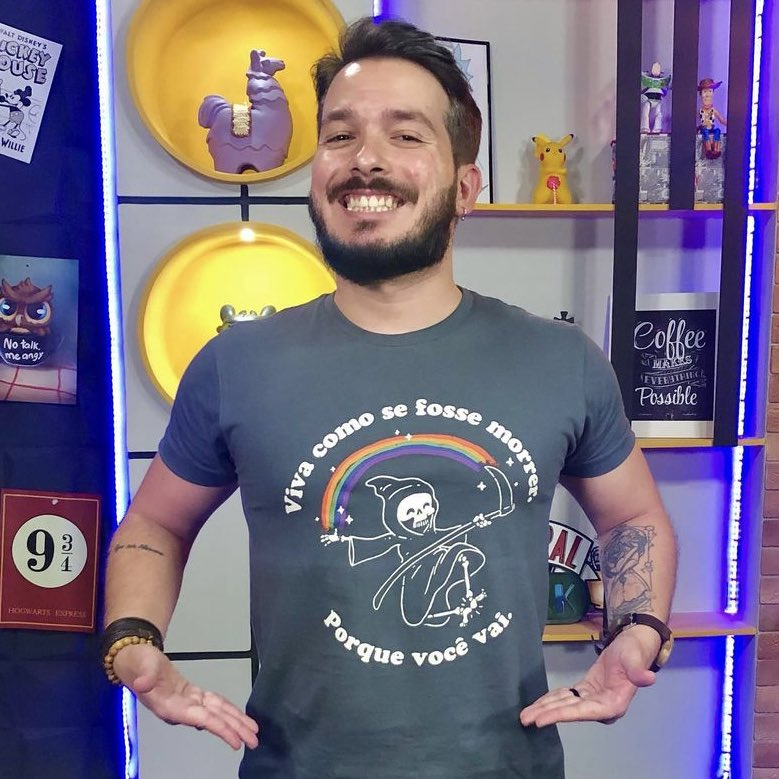
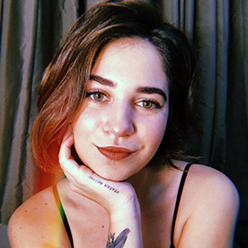
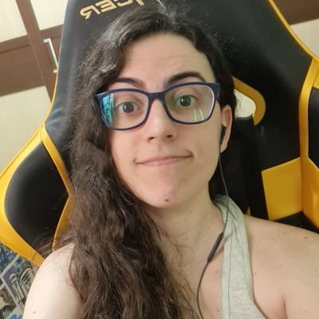
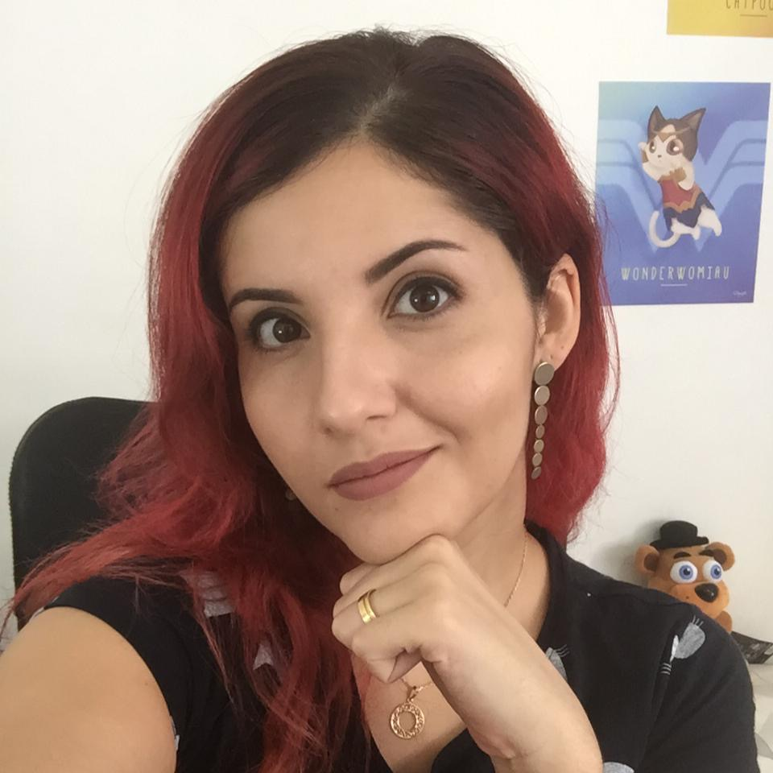

Felipe Neto

É o maior youtuber do Brasil, com mais de 45M de inscritos, é o "chefe" e o "dono" da netolab. nasceu em 1988 e tem 30 anos. E é integrante da webserie "Los5".
Bruno Correa
É amigo do Felipe e tem mais de 8M de inscritos no Youtube, possui atualmente 33 anos de idade e participa da webserie "Los5".
Bruno Mozka  Bruno, mais conhecido como "mozka" é DJ mas faz parte da equioe desde 2019 e atualmente está com 32 anos.
Victor Monteiro

Victor Monteiro faz parte da Netolab, mas cuida da parte do RH da empresa (Play9) onde a equipe foi criada. Atualemnte ele tem 33 anos, um canal com quase 40 mil inscritos e participa da webserie "Los5".
Marcel Albuquerque

Marcel é primo do Felipe, tem atualmente 36 anos e, é formado em Filosofia. Atuava como professor até a metade deste ano.
Marcella Tonini
 Marcella é a "cameragirl" da equipe, possui uma conta no Instagram com 60 mil seguidores e namora o também membro da equipe; Marcel.Samanta LimaSamanta Lima é uma das minhas integrantes favoritas, ela é chamada de "Sam" e, é uma das integrantes mais conhecidas. Ela tem uma conta no tiktok com mais de 1M e 30 anos de idade. Ela também faz parte da webserie "Los5".
Barbara Buru

Conhecida como "Buru" ela é streamer na Twitch e, é uma das poucas integrantes que moram em outra estado (ES). Atualmente ela tem 30 anos.
Vi Marchetti

Vi é uma das minhas preferidas, ela é formada em arte digital e trabalha no ramo das thumbnails/capas dos vídeos. Ela é muito marcante é seu cabelo vermelho. Ela atualmente tem 30 anos. E assim como TODOS os integrantes, a cor das figurinhas é a mesma de seus personagens no jogo online "Among Us".